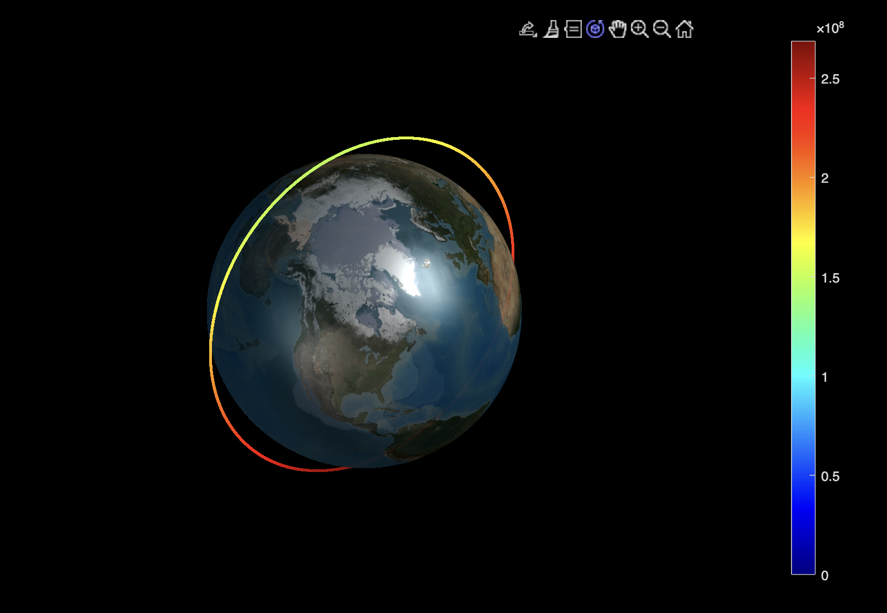
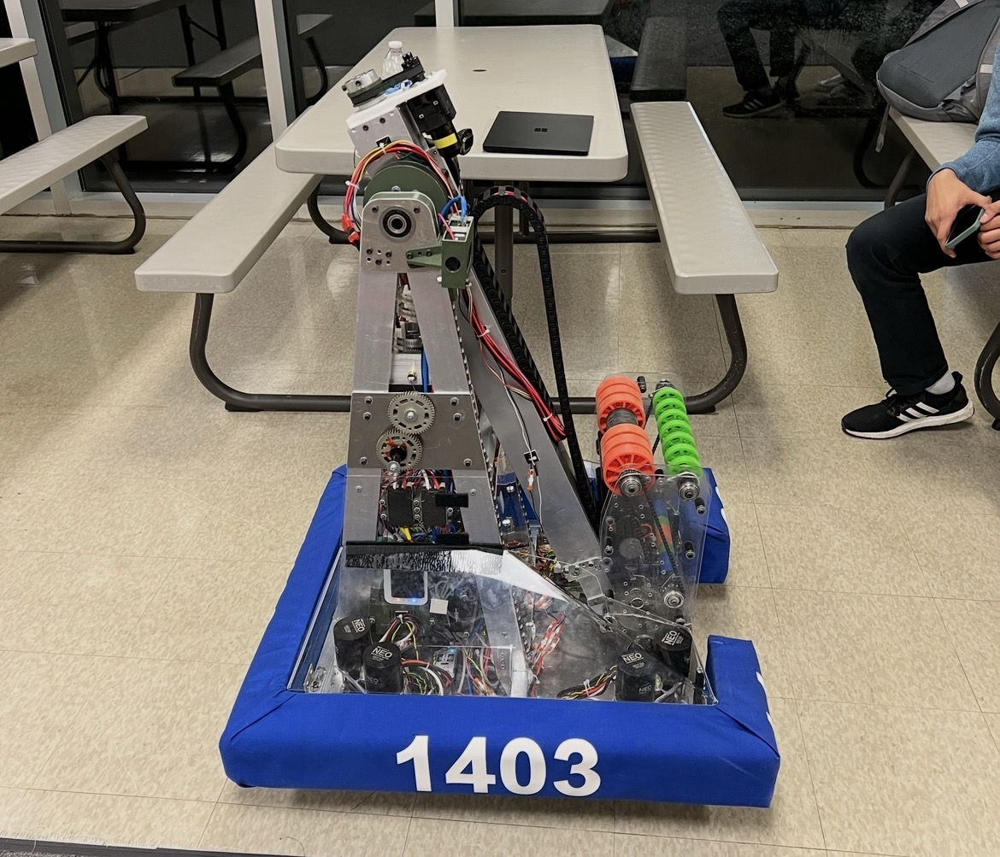
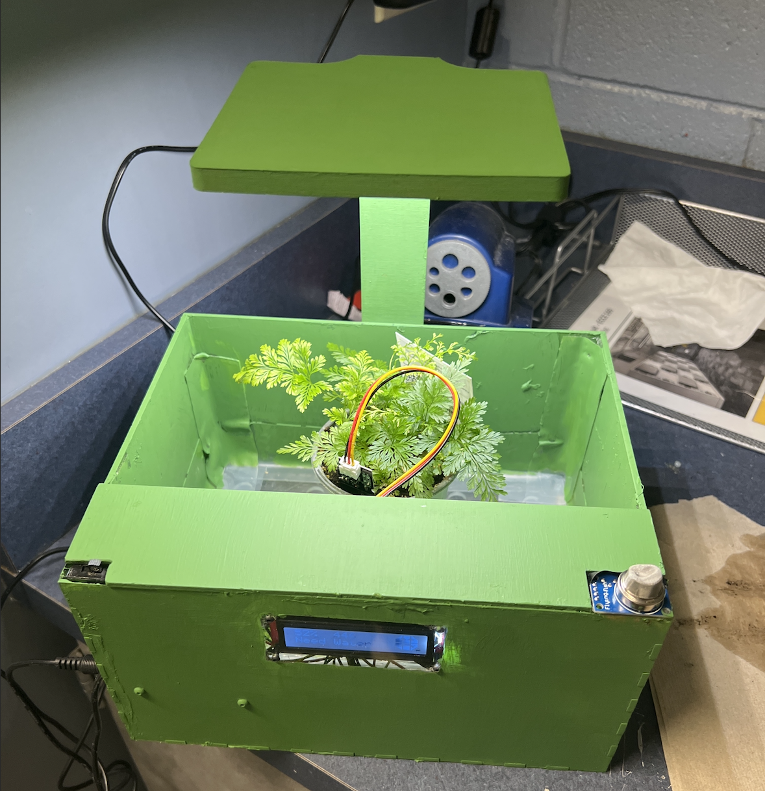

Selected Work
Projects

Pressure Sensor Array
A 16-sensor pressure sensor that measures the pressure on the front of our car's radiator and create a pressure gradient. This allows us to verify the prosoity of the radiator and enable accurate CFD for our new sidepod.

Gravity Anomaly Detection Satellite
Designing next GRACE satellite mission to utilize time dilation of atomics clocks to accurately measure gravity changes around the globe and replace current laser-ranging technology for 2032.

2023 Season Robot
Led development of short-time extension telescoping arm, multi-gamepiece intake, and robust A-frame to maximize scoring potential while prioritizing manufacturability and ease-of-repair.

Children's Interactive Planter
Desiged an interactive planter to encourage good-gardening practices and teach children the significance of climate change using fun-graphics based on soil moisture level.